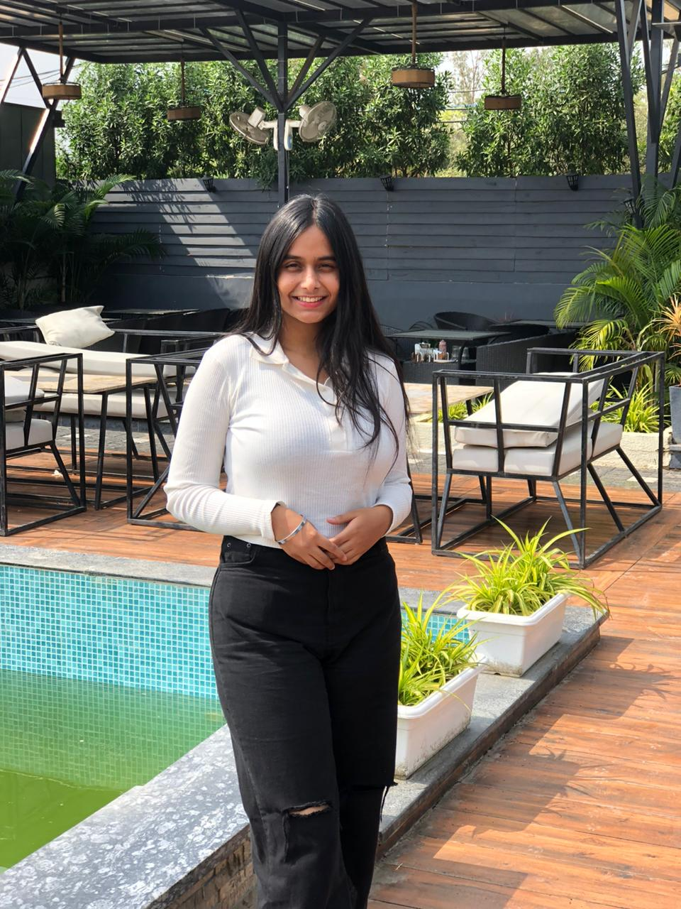

About Me

Motivated and detail-oriented BBA student specialising in Finance, Digital Business, and Entrepreneurship. Strong foundation in financial analysis, e-commerce operations, and digital marketing. Seeking opportunities to contribute to business growth while enhancing my learning in a dynamic, innovation-driven environment.
Education
- BBA in Finance - Barkatullah University Bhopal (2023 - 2026)
- BBA in Digital Business - IIM Bangalore (2024 - 2027)
- 10th - Kendriya Vidyalaya Bairagarh (2021) 87.6%
- 12th - Kendriya Vidyalaya Bairagarh (2023) 83.8%
Projects
- Financial Strategy Report: Executed an in-depth financial project involving balance sheet creation, ratio analysis, WACC computation, and capital budgeting (NPV & IRR). Designed a diversified investment portfolio with risk-return assessment. Developed a financial strategy plan focusing on cost control, investment analysis, and profitability forecasting.
Experience
- Intern at Onprice Infotech Pvt. Ltd., Bhopal (Jan 2024 – Feb 2024): Completed an academic internship focused on e-commerce operations and digital marketplace management. Gained practical exposure to online product listing, customer communication, and backend ecommerce operations.
- Intern at Versatile Marketing Agency, Bhopal (Dec 2024 – Feb 2025): Completed hands-on training in digital marketing strategies including SEO, social media marketing, and content marketing. Helped execute real-time marketing campaigns and analysed digital performance using basic analytics tools.
Volunteering
- Cadet Volunteer – Robin Hood Army, Bhopal Chapter: Participated in food distribution drives and academy activities to support underprivileged communities. Contributed to team-led outreach programs and social welfare initiatives aimed at community development and hunger relief.
Skills
- Financial Analysis & Planning
- Digital Marketing (SEO, Social Media)
- E-Commerce Operations
- Strategic Business Planning
- Budgeting and Financial Reporting
- MS Excel (Formulas, Basic Data Analysis)
- MS PowerPoint (Presentations, Reports)
- Google Analytics (Beginner)
- Communication & Team Collaboration
- Problem-Solving and Critical Thinking